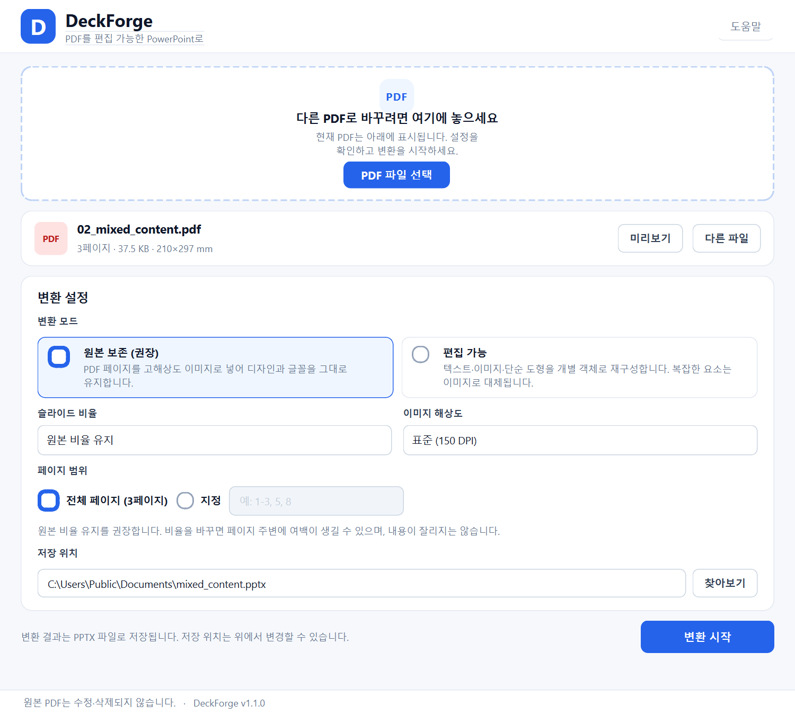

원본 보존 모드
각 페이지를 150/300 DPI PNG로 렌더링해 슬라이드에 삽입합니다. 글꼴과 도형이 그대로 유지됩니다.
Windows 데스크톱 앱 · 오픈소스
디자인을 그대로 살리는 원본 보존 모드와 텍스트·이미지를 개별 객체로 재구성하는 편집 가능 모드를 모두 지원합니다. 변환은 백그라운드에서 진행되어 UI가 멈추지 않습니다.
단일 .exe · Python 설치 불필요 · 약 75MB · Windows 10/11 64비트

Features
PDF를 불러오고, 옵션을 고르고, 저장하면 끝입니다.
각 페이지를 150/300 DPI PNG로 렌더링해 슬라이드에 삽입합니다. 글꼴과 도형이 그대로 유지됩니다.
텍스트, 이미지, 사각형·선·단순 경로를 추출해 PowerPoint에서 직접 수정할 수 있는 객체로 만듭니다.
원본 비율, 16:9, 4:3을 지원하고 페이지 범위를 지정할 수 있습니다. 내용은 잘리지 않고 여백으로 맞춰집니다.
임시 파일에 먼저 저장하고 ZIP/OPC 구조와 슬라이드 수를 검증한 뒤 최종 위치로 원자적 이동합니다.
페이지 단위 진행률을 표시하고, 현재 페이지 처리가 끝난 뒤 안전하게 취소할 수 있습니다.
암호가 필요한 PDF는 변환 전에 최대 3회까지 입력받습니다. 권한 제한을 우회하지 않습니다.
Two modes
기본값은 디자인 보존에 가장 안전한 원본 보존 모드입니다.
기본
페이지 전체를 이미지로 삽입합니다. 복잡한 디자인, 글꼴, 표, 도형을 가장 정확하게 유지합니다.
편집용
PDF 객체를 추출해 PowerPoint 도형과 텍스트 상자로 재구성합니다. 문구 수정과 이미지 교체에 적합합니다.
| 항목 | 원본 보존 | 편집 가능 |
|---|---|---|
| 디자인 재현 | 매우 높음 | 지원 범위 내 |
| 텍스트 수정 | 불가 | 가능 |
| 이미지 교체 | 불가 | 가능 |
| 스캔 PDF | 권장 | 이미지로 유지 |
| 파일 크기 | 큼 | 상대적으로 작음 |
Workflow
드래그 앤 드롭하거나 파일 선택 버튼을 누릅니다.
모드, 비율, 해상도, 페이지 범위, 저장 위치를 정합니다.
페이지 단위 진행률을 확인하고 필요하면 취소합니다.
완료 화면에서 폴더를 열고 PowerPoint로 결과를 확인합니다.
Getting started
아래 버튼에서 SlideBridge.exe를 내려받아 더블클릭하면 됩니다. Python 설치 없이 실행되며, 소스에서 실행하려면 오른쪽 명령을 사용하세요.
v1.0.0 · 약 75MB · 릴리스 노트
서명되지 않은 실행 파일이라 Windows SmartScreen 경고가 표시될 수 있습니다.
SlideBridge.exe 저장# 1. 저장소 복제
git clone https://github.com/kaiytr/pdf_to_pptx.git
cd pdf_to_pptx
# 2. 가상환경과 의존성 설치
py -3.11 -m venv .venv
.\.venv\Scripts\python.exe -m pip install -r requirements.txt
# 3. 실행
.\.venv\Scripts\python.exe main.pyVerification
과장 없이 현재 상태를 공개합니다.
이 환경에 PowerPoint가 없어 생성 파일은 python-pptx 재오픈과 ZIP/OPC 구조 검증까지만 수행했습니다.
Limitations
자간·커닝·기준선·bullet·다단 구성은 완전히 보존되지 않을 수 있습니다. 그라데이션, 투명도, 블렌드 모드, 클리핑 패스는 단순화됩니다.
페이지 회전(/Rotate)은 반영하지만 개별 객체의 회전은 근사 처리됩니다. 글꼴은 PPTX에 포함되지 않아 대상 PC에 없으면 대체 글꼴이 사용됩니다.
주석, 링크, 폼 필드, 디지털 서명, 스크립트는 변환하지 않습니다. 스캔 문서는 OCR 없이 이미지로 유지됩니다.
PPTX 미리보기는 제공하지 않습니다. 앱의 미리보기는 원본 PDF 페이지만 표시하며, 최종 결과는 PowerPoint에서 확인해야 합니다.
Windows용 실행 파일을 내려받아 바로 시작하세요.